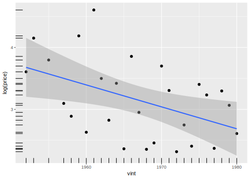
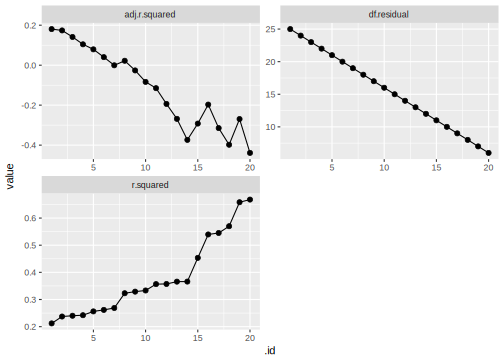
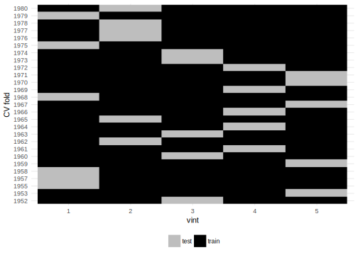

Chapter 16 Prediction and Model Comparison
16.1 Prerequisites
library("tidyverse")
library("broom")
library("modelr")##
## Attaching package: 'modelr'## The following object is masked from 'package:broom':
##
## bootstraplibrary("stringr")16.2 Measures of Prediction
Ideally the prediction measure should be derived from the problem at hand; There is no uniformly correct measure of accuracy, so absent other costs the the analysis should include the costs of outcomes to the [analyst(https://en.wikipedia.org/wiki/Decision_theory).
Categorical variables
- Accuracy: (True Positive) + (True Negative) / (all observations)
- Precision: (True Positives) / (Classifier Positives)
- Sensitivity (recall): (True Positive) / (All positives)
- Specificity: (True negative) / (Classifier negatives)
- F1 score which balances precision (TP / (TP + FP)) and recall (TP / (TP + FN)) as (precision * recall) / (precision + recall)
Continuous Variables
- Root Mean Squared Error (RMSE): \(\frac{1}{m} \sum_i (\hat{y}_i - y_i)^2\). This is weights large errors heavily since it uses “quadratic errors”.
- Mean Absolute Devision (MAD): \(\frac{1}{m} \sum_i \|\hat{y}_i - y_i \|\). This is robust to large errors, but sensitive to the scale of the forecasts.
- Mean Absolute Percentage Error (MAPE): \(\frac{1}{m} \sum_i \| (\hat{y}_i - y_i) / y_i \|\).
16.3 Model Comparison
For comparing models in terms of prediction we want to compare them on their expected error on future data, not their in-sample error. It is easy to minimize in-sample error, use the every-observation-is-special model—have a predictor for each observation. However, that model will have no ability to predict future observations.
The fundamental problem to estimating the expected error of the model is that we don’t have the future data to evaluate it. Even if we acquire new data that did not exist at the time of fitting the model, all that can be done is to retrospectively evaluate the model performance, perhaps giving a better estimate of the expected error of the model in the future. Yet, any errors of the model with respect to any future data will still be unknown. For example the errors of model based forecasts of the popular vote share, electoral votes, or winner of the U.S. presidential election of 2016 can be transparently evaluated since they can be made prior to the data, and short of access to a time machine, the models cannot overfit or peak on future data. After the election the models can be evaluated. However, at that point it is their expected error in the next election in 2020 which is of interest, and that is still unknown.
There are two main approaches to estimating the prediction error
- cross validation: Split the data into test and training subsets. The model is fit on the training data, and predictions are made on the test data. This is often done repeatedly.
- covariance estimates: These are analytic estimates of the expected error, usually restricted to either linear models and/or only asymptotically valid. But since they do not require resampling, they are fast.
So when do these approaches work? When do measures based on in-sample data extrapolate to non-sample errors? Like pretty much every statistical method, they work when the sample used to fit the model resembles the data on which which inference is being made.
16.4 Example: Predicting the Price of Wine
The bordeaux dataset contains the prices of vintages of Bordeaux wines sold at auction in New York, as well as the the weather and rainfall for the years of the wine. This data was used by economist, Orley Ashenfelter, to show that the quality of a wine vintage can be as measured by its price, can largely be predicted by its age, and the weather (temperature and rainfall) of its vintage year. At the time, these prediction were not taken kindly by the wine conoisseurs.[^wine]
# devtools::install_github("jrnold/datums")
bordeaux <- datums::bordeaux %>%
mutate(lprice = log(price / 100)) %>%
dplyr::filter(!is.na(price))The data contains 27 prices of Bordeaux wines sold at auction in New York in 1993 for vintages from 1952 to 1980; the years 1952 and 1954 were excluded because they were rarely sold. Prices are measured as an index where 100 is the price of the 1961. Since prices are 7
The dataset also includes three predictors of the price of each vintage:
time_sv: Time since the vintage, where 0 is 1983.wrain: Winter (October–March) rainhrain: Harvest (August–September) raindegrees: Average temperature in degrees centigrade from April to September in the vintage year.
The first variable to consider is the age of the vintage and the price:
ggplot(filter(bordeaux, !is.na(price), !is.na(vint)),
aes(y = log(price), x = vint)) +
geom_point() +
geom_rug() +
geom_smooth(method = "lm")
Ashenfleter, Ashmore, and Lalonde (1995) run two models. All models were estimated using OLS with log-price as the outcome variable. The predictors in the models were:
- vintage age
- vintage age, winter rain, harvest rain
We’ll start by considering these models. Since we are running several models, we’ll define the model formulae in a list
mods_f <- list(lprice ~ time_sv,
lprice ~ time_sv + wrain + hrain + degrees)and, run each model and store the results in a data frame as list column of lm objects:
mods_res <- tibble(
model = seq_along(mods_f),
formula = map_chr(mods_f, deparse),
mod = map(mods_f, ~ lm(.x, data = bordeaux))
)
mods_res## # A tibble: 2 × 3
## model formula mod
## <int> <chr> <list>
## 1 1 lprice ~ time_sv <S3: lm>
## 2 2 lprice ~ time_sv + wrain + hrain + degrees <S3: lm>Now that we have these models, extract the coefficients into a data frame with the broom function tidy:
mods_coefs <- mods_res %>%
# Add column with the results of tidy for each model
# conf.int = TRUE adds confidence intervals to the data
mutate(tidy = map(mod, tidy, conf.int = TRUE)) %>%
# use unnest() to expand the data frame to one row for each row in the tidy
# elements
unnest(tidy, .drop = TRUE)
glimpse(mods_coefs)## Observations: 7
## Variables: 9
## $ model <int> 1, 1, 2, 2, 2, 2, 2
## $ formula <chr> "lprice ~ time_sv", "lprice ~ time_sv", "lprice ~ ti...
## $ term <chr> "(Intercept)", "time_sv", "(Intercept)", "time_sv", ...
## $ estimate <dbl> -2.025199170, 0.035429560, -12.145333577, 0.02384741...
## $ std.error <dbl> 0.2472286519, 0.0136624941, 1.6881026571, 0.00716671...
## $ statistic <dbl> -8.191604, 2.593199, -7.194665, 3.327521, 2.420525, ...
## $ p.value <dbl> 1.522111e-08, 1.566635e-02, 3.278791e-07, 3.055739e-...
## $ conf.low <dbl> -2.534376e+00, 7.291126e-03, -1.564624e+01, 8.984546...
## $ conf.high <dbl> -1.516022230, 0.063567993, -8.644422940, 0.038710280...walk(mods_res$mod, ~ print(summary(.x)))##
## Call:
## lm(formula = .x, data = bordeaux)
##
## Residuals:
## Min 1Q Median 3Q Max
## -0.8545 -0.4788 -0.0718 0.4562 1.2457
##
## Coefficients:
## Estimate Std. Error t value Pr(>|t|)
## (Intercept) -2.02520 0.24723 -8.192 1.52e-08 ***
## time_sv 0.03543 0.01366 2.593 0.0157 *
## ---
## Signif. codes: 0 '***' 0.001 '**' 0.01 '*' 0.05 '.' 0.1 ' ' 1
##
## Residual standard error: 0.5745 on 25 degrees of freedom
## Multiple R-squared: 0.212, Adjusted R-squared: 0.1804
## F-statistic: 6.725 on 1 and 25 DF, p-value: 0.01567
##
##
## Call:
## lm(formula = .x, data = bordeaux)
##
## Residuals:
## Min 1Q Median 3Q Max
## -0.46027 -0.23864 0.01347 0.18600 0.53446
##
## Coefficients:
## Estimate Std. Error t value Pr(>|t|)
## (Intercept) -1.215e+01 1.688e+00 -7.195 3.28e-07 ***
## time_sv 2.385e-02 7.167e-03 3.328 0.00306 **
## wrain 1.167e-03 4.820e-04 2.421 0.02420 *
## hrain -3.861e-03 8.075e-04 -4.781 8.97e-05 ***
## degrees 6.164e-01 9.518e-02 6.476 1.63e-06 ***
## ---
## Signif. codes: 0 '***' 0.001 '**' 0.01 '*' 0.05 '.' 0.1 ' ' 1
##
## Residual standard error: 0.2865 on 22 degrees of freedom
## Multiple R-squared: 0.8275, Adjusted R-squared: 0.7962
## F-statistic: 26.39 on 4 and 22 DF, p-value: 4.058e-08Likewise, extract model statistics such as, \(R^2\), adjusted \(R^2\), and \(\hat{\sigma}\):
mods_glance <-
mutate(mods_res, .x = map(mod, glance)) %>%
unnest(.x, .drop = TRUE)
mods_glance %>%
select(formula, r.squared, adj.r.squared, sigma)## # A tibble: 2 × 4
## formula r.squared adj.r.squared
## <chr> <dbl> <dbl>
## 1 lprice ~ time_sv 0.2119700 0.1804488
## 2 lprice ~ time_sv + wrain + hrain + degrees 0.8275278 0.7961692
## # ... with 1 more variables: sigma <dbl>16.5 Cross-Validation
o compare predictive models, we want to compare how well it predicts (duh), which means estimating how well it will work on new data. The problem with this is that new data is just that, …, new.
The trick is to resuse the sample data to get an estimate of how well the model will work on new data. This is done by fitting the model on a subset of the data, and predicting another subset of the data which was not used to fit the model; often this is done repeatedly. There are a variety of ways to do this, depending on the nature of the data and the predictive task. However, they all implictly assume that the sample of data that was used to fit the model is representative of future data.
… model validation is a good, simple, broadly aplicable procedure that is rarely used in social research (Fox, p. 630)
The simple idea of splitting a sample into two and then developing the hypothesis on the basis of one part and testing it on the remainder may perhaps be said to be one of the most seriously neglected ideas in statistics, if we measure the degree of neglect by the ratio of the number of cases in where a method could give help to the number where it was actually used. (Barnard 1974, p. 133, quoted in Fox, p. 630)
16.6 Out of Sample Error
k <- 20
f <- map(seq_len(k),
~ as.formula(str_c("lprice ~ poly(time_sv, ", .x, ")")))
names(f) <- seq_len(k)mods_overfit <- map(f, ~ lm(.x, data = bordeaux))
fits <- map_df(mods_overfit, glance, .id = ".id")fits %>%
select(.id, r.squared, adj.r.squared, df.residual) %>%
gather(stat, value, -.id) %>%
mutate(.id = as.integer(.id)) %>%
ggplot(aes(x = .id, y = value)) +
geom_point() +
geom_line() +
facet_wrap(~ stat, ncol = 2, scales = "free")
The larger the polynomial, the more wiggly the line.
library("modelr")
invoke(gather_predictions, .x = c(list(data = bordeaux), mods_overfit)) %>%
ggplot(aes(x = vint)) +
geom_point(aes(y = lprice)) +
geom_line(aes(y = pred, group = model, colour = as.numeric(model))) Intuitively it seems that as we increase the flexibility of the model by increasing the number of variables the model is overfitting the data, but what does it actually mean to overfit? If we use \(R^2\) as the “measure of fit”, more variables always leads to better fit. Adjusted \(R^2\) does not increase, because the decrease in errors is offset by the increase in the degrees of freedom. However, there is little justification for the specific formula of \(R^2\).
Intuitively it seems that as we increase the flexibility of the model by increasing the number of variables the model is overfitting the data, but what does it actually mean to overfit? If we use \(R^2\) as the “measure of fit”, more variables always leads to better fit. Adjusted \(R^2\) does not increase, because the decrease in errors is offset by the increase in the degrees of freedom. However, there is little justification for the specific formula of \(R^2\).
The problem with over-fitting is that the model starts to fit pecularities of the sample (errors) rather than the underlying model. We’ll never know the underlying model, but what we can see is if the model predicts new data.
wine_mods_f <- list(
lprice ~ time_sv,
lprice ~ poly(time_sv, 2),
lprice ~ wrain,
lprice ~ hrain,
lprice ~ degrees,
lprice ~ wrain + hrain + degrees,
lprice ~ time_sv + wrain + hrain + degrees,
lprice ~ time_sv + wrain * hrain * degrees,
lprice ~ time_sv * (wrain + hrain + degrees),
lprice ~ time_sv * wrain * hrain * degrees,
lprice ~ time_sv * wrain * hrain * degrees + I(time_sv ^ 2)
)16.6.1 Held-out data
A common rule of thumb is to use 70% of the data for training, and 30% of the data for testing.
In this case, let’s partition the data to use the first 70% of the observations as training data, and the remaining 30% of the data as testing.
n_test <- round(0.3 * nrow(bordeaux))
n_train <- nrow(bordeaux) - n_test
mod_train <- lm(lprice ~ time_sv + wrain + hrain + degrees,
data = head(bordeaux, n_train))
mod_train##
## Call:
## lm(formula = lprice ~ time_sv + wrain + hrain + degrees, data = head(bordeaux,
## n_train))
##
## Coefficients:
## (Intercept) time_sv wrain hrain degrees
## -1.080e+01 1.999e-02 9.712e-04 -4.461e-03 5.533e-01# in-sample RMSE
sqrt(mean(mod_train$residuals ^ 2))## [1] 0.2280059The out-of-sample RMSE is higher than the in-sample RMSE.
outsample <- augment(mod_train, newdata = tail(bordeaux, n_test))
sqrt(mean((outsample$lprice - outsample$.fitted) ^ 2))## [1] 0.351573This is common, but not necessarily the case. But note that this value is highly dependent on the subset of data used for testing. In some sense, we may choose as model that “overfits” the testing data.
16.6.2 Leave-One-Out Cross-Validation
For each \(i \in 1, \dots, n\)
- Estimate the model using all observations but \(i\)
- Predict \(\hat{y}_i\) using that model
- Calculate some measure(s) of model fit
Let’s create a function to fit the model on a dataset dropping a single observation.
i <- 1
f <- lprice ~ time_sv + wrain + hrain + degrees
mod <- lm(f, data = bordeaux)
mod##
## Call:
## lm(formula = f, data = bordeaux)
##
## Coefficients:
## (Intercept) time_sv wrain hrain degrees
## -12.145334 0.023847 0.001167 -0.003861 0.616392mod_loo1 <- lm(f, data = bordeaux[-i, ])
mod_loo1##
## Call:
## lm(formula = f, data = bordeaux[-i, ])
##
## Coefficients:
## (Intercept) time_sv wrain hrain degrees
## -12.336504 0.025916 0.001188 -0.003832 0.625560Unsurprisingly the fits of models fit with and without the first observation are similar, since they were fit using \(n - 1\) observations.
Now use the model fit without the first observation to
yhat_loo1 <- predict(mod_loo1, newdata = bordeaux[1, ])
yhat_loo1## 1
## -0.7262297bordeaux$lprice[1] - yhat_loo1## 1
## -0.2724503Now we want to repeat this for all observations,
fit_loo <- function(i, formula, data) {
# fit without i
m <- lm(formula, data = data[-i, ])
# predict i
yhat <- predict(m, newdata = data[i, ])
tibble(i = i, pred = yhat, resid = yhat - data[["lprice"]][[i]])
}
cv_loo <- map_df(seq_len(nrow(bordeaux)), fit_loo, formula = f, data = bordeaux)
sqrt(mean(cv_loo$resid ^ 2))## [1] 0.323004316.6.3 k-fold Cross-validation
The most common approach is to to partition the data into k-folds, and use each fold once as the testing subset, where the model is fit on the other \(k - 1\) folds.
[Cross validation](https://en.wikipedia.org/wiki/Cross-validation_(statistics) is a non-parametric method that splits the data into training and test subsets. The data is fit on the training set and then used the predict the test set.
The most common form of cross validation is 5- or 10-fold cross validation? Why this number of folds? See ISLR 5.1.4 “Bias-Variance Trade-Off for k-Fold Cross Validation”
- Larger number of folds requires more computation: a \(k\)-fold cross validation requires running the model \(k\) times
- A large number of folds has low bias because the result of \((n - 1)\) observations is approximately the same as the result of \(n\) observations
- But larger folds results in higher variance. LOOCV is averaging \(n\) models, but all those models will be similar, because they share almost all the same observations. But with fewer folds the models are fit with fewer overlapping observations and thus will have less correlated results.
cv_fold5 <- modelr::crossv_kfold(bordeaux, k = 5)
glimpse(cv_fold5)## Observations: 5
## Variables: 3
## $ train <list> [<1952.00000, 1953.00000, 1955.00000, 1957.00000, 1958....
## $ test <list> [<1952.00000, 1953.00000, 1955.00000, 1957.00000, 1958....
## $ .id <chr> "1", "2", "3", "4", "5"cv_fold5$train[[1]]## <resample [21 x 7]> 1, 2, 6, 7, 8, 9, 10, 11, 12, 13, ...cv_fold5$test[[1]]## <resample [6 x 7]> 3, 4, 5, 15, 22, 26as.data.frame(cv_fold5$train[[1]])## # A tibble: 21 × 7
## vint price wrain degrees hrain time_sv lprice
## <int> <dbl> <int> <dbl> <int> <int> <dbl>
## 1 1952 36.83654 600 17.1167 160 31 -0.99868
## 2 1953 63.48288 690 16.7333 80 30 -0.45440
## 3 1959 65.83622 485 17.4833 187 24 -0.41800
## 4 1960 13.87738 763 16.4167 290 23 -1.97491
## 5 1961 100.00000 830 17.3333 38 22 0.00000
## 6 1962 33.09725 697 16.3000 52 21 -1.10572
## 7 1963 16.84730 608 15.7167 155 20 -1.78098
## 8 1964 30.59450 402 17.2667 96 19 -1.18435
## 9 1965 10.62522 602 15.3667 267 18 -2.24194
## 10 1966 47.26359 819 16.5333 86 17 -0.74943
## # ... with 11 more rowsas.data.frame(cv_fold5$test[[1]])## # A tibble: 6 × 7
## vint price wrain degrees hrain time_sv lprice
## <int> <dbl> <int> <dbl> <int> <int> <dbl>
## 1 1955 44.57665 502 17.1500 130 28 -0.80796
## 2 1957 22.10735 420 16.1333 110 26 -1.50926
## 3 1958 17.96850 582 16.4167 187 25 -1.71655
## 4 1968 10.53803 610 16.2000 292 15 -2.25018
## 5 1975 30.06886 572 16.9500 171 8 -1.20168
## 6 1979 21.44669 717 16.1667 122 4 -1.53960In k-fold cross-validation, each observation appears in the test-set in one fold, and is in the the training set in the remaining \(k - 1\) folds. The following plot shows this,
cv_fold5_obs <-
cv_fold5 %>%
rowwise() %>%
do(tibble(vint = c(as.data.frame(.$train)$vint,
as.data.frame(.$test)$vint),
fold = .$.id,
set = c(rep("train", dim(.$train)[1]),
rep("test", dim(.$test)[1]))))
ggplot(cv_fold5_obs, aes(y = factor(vint), x = fold, fill = set)) +
geom_raster() +
scale_fill_manual(values = c("train" = "black", "test" = "gray")) +
theme_minimal() +
theme(axis.ticks = element_blank(), legend.position = "bottom") +
labs(x = "vint", y = "CV fold", fill = "")
Example with one fold
fit_train <- lm(f, data = as.data.frame(cv_fold5$train[[1]]))
fit_train##
## Call:
## lm(formula = f, data = as.data.frame(cv_fold5$train[[1]]))
##
## Coefficients:
## (Intercept) time_sv wrain hrain degrees
## -1.131e+01 3.114e-02 9.724e-04 -3.965e-03 5.662e-01fit_test <- augment(fit_train, newdata = as.data.frame(cv_fold5$test[[1]])) %>%
select(vint, lprice, .fitted) %>%
mutate(.resid = .fitted - lprice)
fit_test## vint lprice .fitted .resid
## 1 1955 -0.80796 -0.7542891 0.05367086
## 2 1957 -1.50926 -1.3926673 0.11659270
## 3 1958 -1.71655 -1.4111139 0.30543610
## 4 1968 -2.25018 -2.2342730 0.01590699
## 5 1975 -1.20168 -1.5847434 -0.38306339
## 6 1979 -1.53960 -1.8175094 -0.27790943# could also use modelr::rmse()
mod_rmse <- sqrt(mean(sum(fit_test$.resid ^ 2)))
mod_rmse## [1] 0.5779186Let’s apply that to each row using map. That way we keep the results together in the same data frame.
fit_train <- lm(f, data = as.data.frame(cv_fold5$train[[1]]))
fit_train##
## Call:
## lm(formula = f, data = as.data.frame(cv_fold5$train[[1]]))
##
## Coefficients:
## (Intercept) time_sv wrain hrain degrees
## -1.131e+01 3.114e-02 9.724e-04 -3.965e-03 5.662e-01fit_test <- augment(fit_train, newdata = as.data.frame(cv_fold5$test[[1]])) %>%
select(vint, lprice, .fitted) %>%
mutate(.resid = .fitted - lprice)
fit_test## vint lprice .fitted .resid
## 1 1955 -0.80796 -0.7542891 0.05367086
## 2 1957 -1.50926 -1.3926673 0.11659270
## 3 1958 -1.71655 -1.4111139 0.30543610
## 4 1968 -2.25018 -2.2342730 0.01590699
## 5 1975 -1.20168 -1.5847434 -0.38306339
## 6 1979 -1.53960 -1.8175094 -0.27790943# could also use modelr::rmse()
mod_rmse <- sqrt(mean(sum(fit_test$.resid ^ 2)))
mod_rmse## [1] 0.5779186fit_cv_fold5 <-
cv_fold5 %>%
mutate(
# fit each row using train as the data
fit_train = map(train,
~ lm(f, data = as.data.frame(.x))),
# predicted values
predict_test = map(train,
~ predict(fit_train, newdata = as.data.frame(.x))),
# calculate out-of-sample RMSE
rmse = map2_dbl(train, predict_test,
~ sqrt(mean((as.data.frame(.x)$lprice - .y) ^ 2))))Let’s apply this to all the models. In the previous steps we kept a lot of extra information in order to understand how cross-validation worked. But really, all we care about is the average RMSE.
mod_rmse_fold <- function(f, train, test) {
fit <- lm(f, data = as.data.frame(train))
# sqrt(mean(residuals(fit, newdata = as.data.frame(test)) ^ 2))
test_data <- as.data.frame(test)
err <- test_data$lprice - predict(fit, newdata = test_data)
sqrt(mean(err ^ 2))
}
mod_rmse_fold(f, cv_fold5$train[[1]], cv_fold5$test[[1]])## [1] 0.2359343Now calculate this for a single model formula, averaging over all folds:
mod_rmse <- function(f, data) {
map2_dbl(data$train, data$test,
function(train, test) {
mod_rmse_fold(f, train, test)
}) %>%
mean()
}Now we can apply this to all the models:
mod_comparison <-
tibble(formula = wine_mods_f,
.name = map_chr(formula, deparse),
.id = seq_along(wine_mods_f),
rmse = map_dbl(wine_mods_f, mod_rmse, data = cv_fold5))
mod_comparison %>% select(.name, rmse) ## # A tibble: 11 × 2
## .name rmse
## <chr> <dbl>
## 1 lprice ~ time_sv 0.6086064
## 2 lprice ~ poly(time_sv, 2) 0.6100899
## 3 lprice ~ wrain 0.6918896
## 4 lprice ~ hrain 0.5925636
## 5 lprice ~ degrees 0.5025091
## 6 lprice ~ wrain + hrain + degrees 0.3733184
## 7 lprice ~ time_sv + wrain + hrain + degrees 0.3250124
## 8 lprice ~ time_sv + wrain * hrain * degrees 0.4522841
## 9 lprice ~ time_sv * (wrain + hrain + degrees) 0.3926909
## 10 lprice ~ time_sv * wrain * hrain * degrees 1.0599623
## 11 lprice ~ time_sv * wrain * hrain * degrees + I(time_sv^2) 1.416714216.7 Analytic Covariance Methods
For some models, notably linear regression, analytical approximations to the expected out of sample error can be made. Each of these approximations will make some slightly different assumptions to plug in some unknown values.
Adjusted \(R^2\) is most often seen in statistical software and in papers (though often never interpreted). It intuitively penalizes a regression for a higher number of predictors; however apart from that intuitive appeal, and unlike the other measures presented here, there is no deeper justification for it (Fox, p. 609): \[ \mathrm{adj}\,R^2 = 1 - \frac{\hat{\sigma}^2}{\Var{(Y)}} = 1 - \frac{n - 1}{n - k - 1} \times \frac{\sum (y_i - \hat{y}_i^2)}{\sum (y_i - \bar{y})^2} \]
In linear regression, the LOO-CV MSE can be calculated analytically, and without simulation. It is (ISLR, p. 180): \[ \text{LOO-CV} = \frac{1}{n} \sum_{i = 1}^n {\left(\frac{y_i - \hat{y}_i}{1 - h_i} \right)}^2 = \frac{1}{n} \sum_{i = 1}^n {\left(\frac{\hat{\epsilon}_i}{1 - h_i} \right)}^2 = \frac{1}{n} \times \text{PRESS} \] where PRESS is the predictive residual sum of squares, and \(h_i\) is the hat-value of observation \(i\) (Fox, p. 270, 289) \[ h_i = \mat{X}(\mat{X}' \mat{X})^{-1} \mat{X}' \]
loocv <- function(x) {
mean((residuals(x) / (1 - hatvalues(x))) ^ 2)
}An alternative approximation of the expected out-of-sample error is the generalized cross-validation criterion (GCV) is (Fox, 673) \[ GCV = \frac{n}{df_{res}^2} \times RSS = \frac{n}{(n - k - 1)^2} \times \sum \hat{\epsilon}^2_i \]
gcv <- function(x) {
err2 <- residuals(x) ^ 2
n <- length(err2)
(n / x[["df.residual"]] ^ 2) * sum(err2)
}Since we generated the LOO data manually using a loop, create a LOO cross validation data frame using crossv_kfold:
cv_loo <- crossv_kfold(bordeaux, nrow(bordeaux))mod_comparison <-
tibble(formula = wine_mods_f,
.name = map_chr(formula, deparse),
.id = seq_along(wine_mods_f),
rmse_5fold = map_dbl(wine_mods_f, mod_rmse, data = cv_fold5),
rmse_loo = map_dbl(wine_mods_f, mod_rmse, data = cv_loo),
mod = map(formula, lm, data = bordeaux),
gcv = sqrt(map_dbl(mod, gcv)),
loocv = sqrt(map_dbl(mod, loocv))
)
mod_comparison %>% select(.name, rmse_loo, rmse_5fold, gcv, loocv)## # A tibble: 11 × 5
## .name rmse_loo
## <chr> <dbl>
## 1 lprice ~ time_sv 0.5194518
## 2 lprice ~ poly(time_sv, 2) 0.5312953
## 3 lprice ~ wrain 0.5703790
## 4 lprice ~ hrain 0.4635317
## 5 lprice ~ degrees 0.4031840
## 6 lprice ~ wrain + hrain + degrees 0.3092453
## 7 lprice ~ time_sv + wrain + hrain + degrees 0.2767282
## 8 lprice ~ time_sv + wrain * hrain * degrees 0.3199831
## 9 lprice ~ time_sv * (wrain + hrain + degrees) 0.3128323
## 10 lprice ~ time_sv * wrain * hrain * degrees 0.7493031
## 11 lprice ~ time_sv * wrain * hrain * degrees + I(time_sv^2) 0.7287324
## # ... with 3 more variables: rmse_5fold <dbl>, gcv <dbl>, loocv <dbl>Other measures that are also equivalent to some form of an estimate of the out-of-sample error are the AIC and BIC.
16.8 Further Resources
- Fox (2016) Chapter 22: “Model Selection, Averaging, and Validation”, p. 669.
- James et al. (2013), Ch. 5. “Resampling Methods”
- Hastie, Tibshirani, and Friedman (2009), Ch. 7. “Model Assessment and Selection”
- Rob Hyndman’s blog posts on cross validation, time series cross validation, and leave-one-out CV in linear models.
References
Fox, John. 2016. Applied Regression Analysis & Generalized Linear Models. 3rd ed. Sage.
James, Gareth, Daniela Witten, Trevor Hastie, and Robert Tibshirani. 2013. An Introduction to Statistical Learning with Applications in R. 6th ed. Springer.
Hastie, Trevor, Robert Tibshirani, and Jerome Friedman. 2009. The Elements of Statistical Learning. Springer-Verlag New York Inc. http://www.ebook.de/de/product/8023140/trevor_hastie_robert_tibshirani_jerome_friedman_the_elements_of_statistical_learning.html.